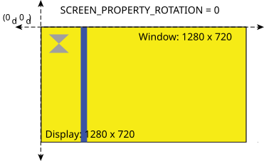
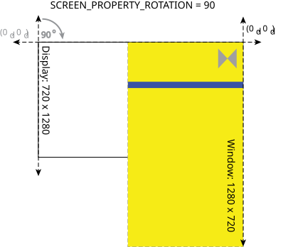
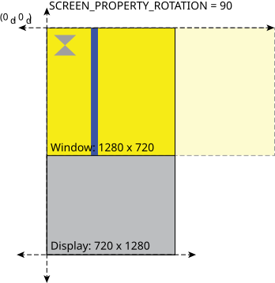

Display rotation affects the display coordinate system.
The rotation of a display is described by its SCREEN_PROPERTY_ROTATION property. When you change this property, you are effectively rotating the display coordinate system for the associated display. After rotating the display coordinates as specified by the SCREEN_PROPERTY_ROTATION property, Screen clips, where applicable, any windows that are outside the bounds of the display.
The following example shows what happens when you set the display's SCREEN_PROPERTY_ROTATION property to 90 (to achieve a rotation of 90 degrees clockwise):
The display and window are the same size (1280 x 720) and start in the same position. The window's and display's positions are both (0d, 0d) in the display coordinate system.

When the display's SCREEN_PROPERTY_ROTATION property is set to 90, this changes the position of (0d, 0d) with respect to the original display coordinates. The window is still positioned at (0d, 0d) in the new display coordinate system. The display's position is also still at (0d, 0d), but its size is changed to 720 x 1280 to reflect the rotation of 90 degrees clockwise.

Now with the rotation, the window's content no longer fits inside the bounds of the display. Screen clips the window to fit into the new display dimensions.
